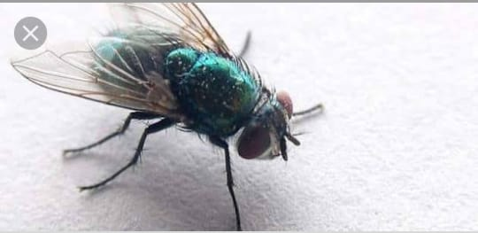
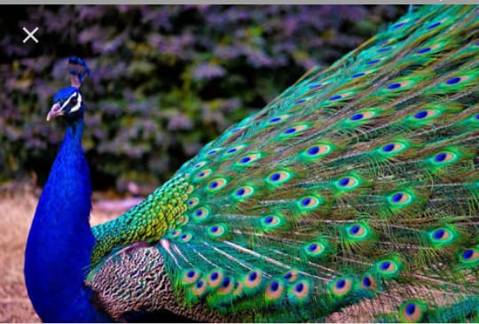

1 / 2

يعتبر الذباب أكثر الحشرات شيوعاً في
المنازل، وفيما يلي أكثر المعلومات الرائعة
عنه: يعيش الذباب في جميع الأماكن التي
يعيش فيها الإنسان تقريباً باستثناء القارة
القطبية الجنوبية وبعض الجزر وتقريباً في
كلِّ مرةٍ يحطُّ فيها الذباب فإنّه يتبرّز
بالإضافة إلى أنّه يتقيأ في أي مكانٍ يمكن
أن يجلب له طعاماً توجد براعم التذوق
عند الذباب في أقدامه؛ لذا فهو يجلس فوق
الطعام لمعرفة طعمه. ينقل الذباب الكثير
من الأمراض؛لأنّه يتنقل فوق الفضلات
ويتقيأ على الأماكن التي يطأ عليها، ومن
الأمراض التي ينقلها الكوليرا والجيارديا،
والدوسنتاريا، والجذام، والتيفوئيد، والسالمونيلا
.وإلتهاب الملتحمة، وغيرها الكثير من
الأمراض. فم الذباب يشبه الإسفنج؛
لذا يتكوّن نظامه الغذائيّ من السوائل
ولكن إذا وجد طعاماً صلباً لذيذاً فهو
.يقوم بفرز عصارته الهضمية عليها
لتذويبه ثمَّ يمتصه
2 / 2

طائر الطاووس
يعد الطاووس أجمل الطيور التي تعيش على
سطح الكرة الأرضية، ويُطلق عليه أحياناً لقب
ملك الطيور؛ لما يتمتع به من ألوان رائعة
وجذابة تلفت الأنظار، والموطن الأصلي لهذا
الطائر هو غابات الدول الاستوائية الرطبة و
الدافئة في قارة آسيا، مثل: غايات الهند
وسريلانكا وباكستان، وهو طائر شهير و
معروف في كل دول العالم، وتكاد لا تخلو
.منه حديقة للطيور في دول العالم أجمع
صفات الطاووس
أكثر ما يميز طائر الطاووس عن الطيور
الأخرى هو ذيله ذو الريش الملون، والذي
يقوم الطاووس الذكر بفرده على شكل مروحة
كبيرة خلفه، يبلغ طولها قرابة خمسة أضعاف
طول جسمه، واستعراضه أمام الناس، وهو
يُعرف بين الناس عادة بصفات الجمال والزهو،
والكبرياء، والغرور، والعجرفة، ويتميز بمشيته
التي تعكس الكبرياء والتألق، وهو طائر يرفض
عادة الاختلاط بالطيور الأخرى المدجنة.
الطاووس طائر اجتماعي بطبعه، ويعيش في
البرية ضمن جماعات تحمي بعضها البعض،
وأنثى الطاووس أصغر حجماً من الذكر،
وتمتلك ذيلاً قصيراً وريشاً قاتماً، ولا تمتلك
في ذيله ريشاً ملوناً مثل الذكر، ويُطلق
عليها العرب اسم طاووسة، ويمتلك الطاووس
صوتاً مرتفعاً جداً يستخدمه لتحذير أفراد
.مجموعته